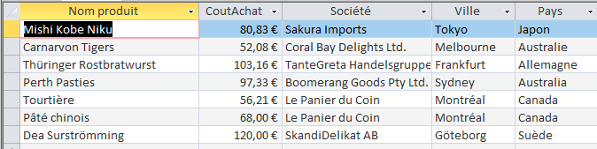
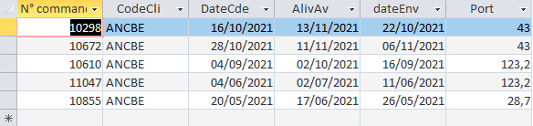
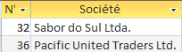
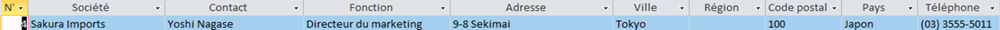

Indicateur 1 : Quels sont les produits (fournisseur et pays de provenance) de catégorie viandes ou
poissons ayant un coût d’achat de plus de 50€ ?
Interprétation
L'objectif est d'extraire une liste de produits très chers (CoutAchat > 50€) appartenant exclusivement
aux catégories "Viandes" OU "Produit de la mer".
Pour chaque produit correspondant, nous devons afficher une fiche détaillée :
- Le nom du produit
- Son prix d'achat (pour vérification)
- Le nom du fournisseur
- La ville du fournisseur
- Le pays du fournisseur
Cela nécessite de joindre les tables Produit, Categorie, et Fournisseur et d'appliquer un filtre combiné
(sur le prix ET sur les deux catégories).
Résultat
 50€)
appartenant exclusivement aux catégories Viandes OU Produit de la mer">
Code SQL
SELECT Produit.NomProd, Produit.CoutAchat, Fournisseur.Societe, Fournisseur.Ville, Fournisseur.Pays
FROM Categorie INNER JOIN (Fournisseur INNER JOIN Produit ON Fournisseur.NoFour = Produit.NoFour) ON Categorie.CodeCateg = Produit.CodeCateg
WHERE (NomCateg="Viandes" OR NomCateg="Poissons et fruits de mer") AND CoutAchat>50;
Indicateur 2 : Quel sont les CINQ dernières commandes du client Max Deschamps ?
Interprétation
L'objectif est de retrouver la liste des CINQ commandes les plus récentes passées par un client
spécifique, "Max Deschamps".
Pour cela, il faut :
- Joindre les tables Clientele et Commande (sur CodeCli).
- Filtrer les résultats pour ne garder que le contact "Max Deschamps".
- Trier les commandes trouvées par date (AlivAv), de la plus récente à la plus ancienne (en utilisant
ORDER BY AlivAv DESC).
- Limiter le résultat final aux CINQ premières lignes (TOP 5 en Access SQL) pour n'afficher que les
CINQ dernières.
Résultat

Code SQL
SELECT TOP 5 Commande.*
FROM Clientele INNER JOIN Commande ON Clientele.CodeCli = Commande.CodeCli
WHERE Contact="Max Deschamps"
ORDER BY AlivAv DESC;
Indicateur 3 : Quels fournisseurs hors France n’ont pas encore de produits au catalogue de Kdou ?
Interprétation
L'objectif est d'identifier des fournisseurs "inactifs" qui sont basés à l'étranger.
Pour cela, il faut :
- Regarder la table Fournisseur pour trouver tous ceux dont le Pays n'est pas "France" (Pays <>
'France').
- Prendre cette liste de fournisseurs étrangers et la comparer à la table Produit.
- Utiliser une jointure externe (LEFT JOIN) pour lier les Fournisseur aux Produit.
- Ne garder que les fournisseurs pour lesquels il n'existe aucun produit correspondant (ceux où la
référence du produit est Null).
Résultat

Code SQL
SELECT Fournisseur.NoFour, Fournisseur.Societe
FROM Fournisseur LEFT JOIN Produit ON Fournisseur.NoFour = Produit.NoFour
WHERE Produit.NoFour Is Null AND Pays<>"France";
Indicateur 4 : Quels fournisseurs proposent de la viande et du poisson ?
Interprétation
L'objectif est de trouver les fournisseurs qui ont dans leur catalogue à la fois des produits de la
catégorie "Viandes" ET des produits de la catégorie "Produit de la mer" (poissons).
Ce n'est pas une simple recherche "OU" nous devons :
- Identifier tous les fournisseurs qui vendent de la "Viande".
- Identifier tous les fournisseurs qui vendent du "Produit de la mer".
- Trouver les noms qui apparaissent dans les two listes en même temps (c'est l'intersection des deux
groupes).
Résultat

Code SQL
SELECT DISTINCT F.*
FROM (Fournisseur AS F INNER JOIN Produit AS P1 ON F.NoFour = P1.NoFour) INNER JOIN Categorie AS C1 ON P1.CodeCateg = C1.CodeCateg, (Fournisseur AS F2 INNER JOIN Produit AS P2 ON F2.NoFour = P2.NoFour) INNER JOIN Categorie AS C2 ON P2.CodeCateg = C2.CodeCateg
WHERE F.NoFour = F2.NoFour AND C1.NomCateg LIKE "*Viande*" AND C2.NomCateg LIKE "*Poisson*"
ORDER BY F.NoFour;